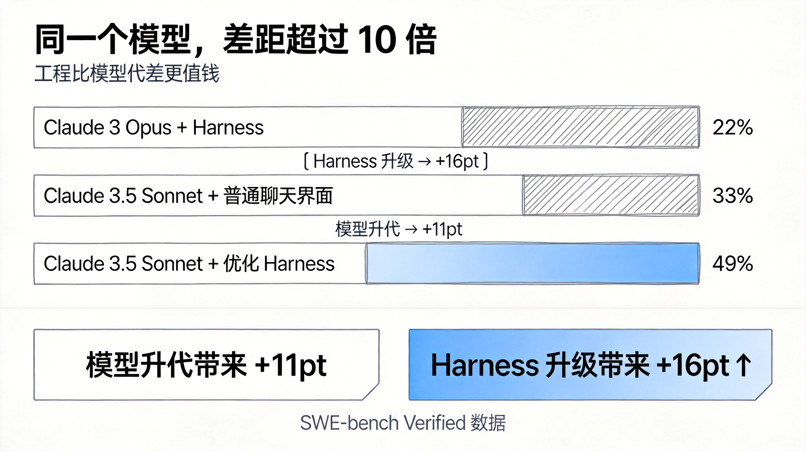
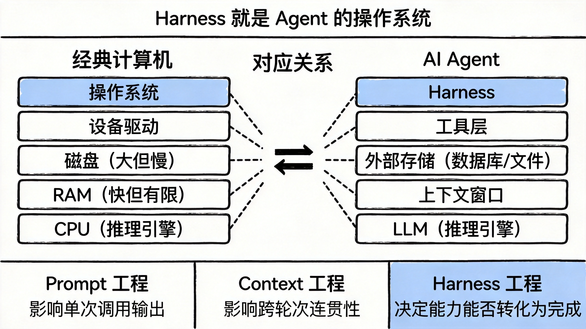
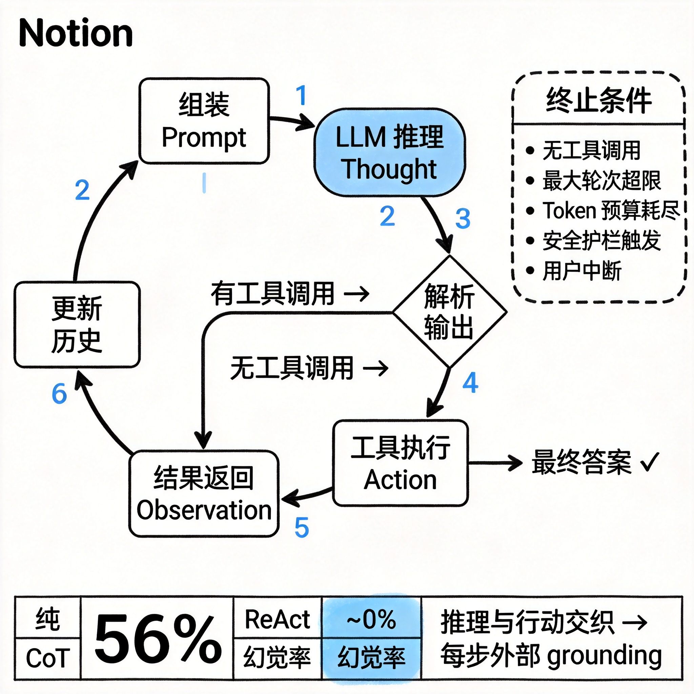
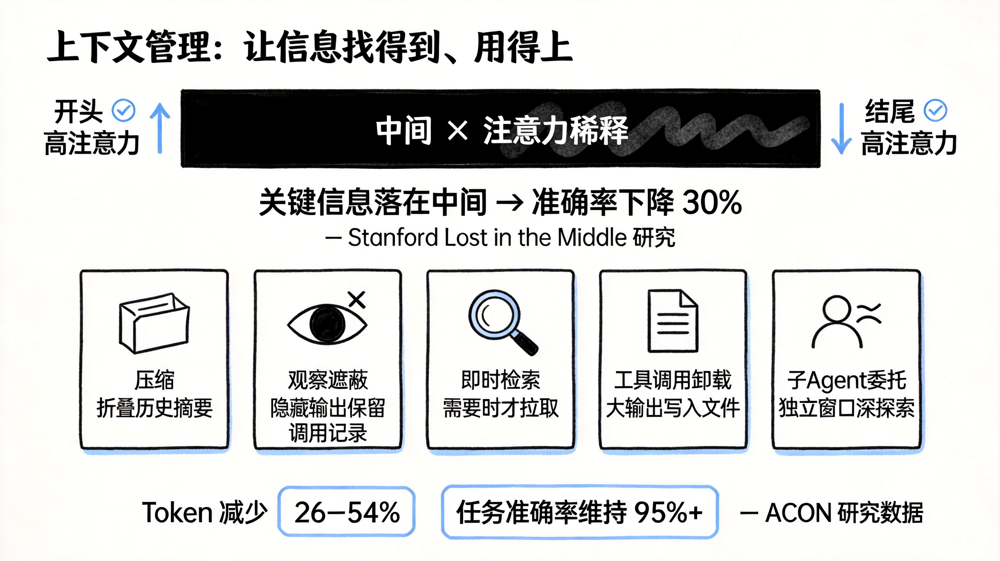
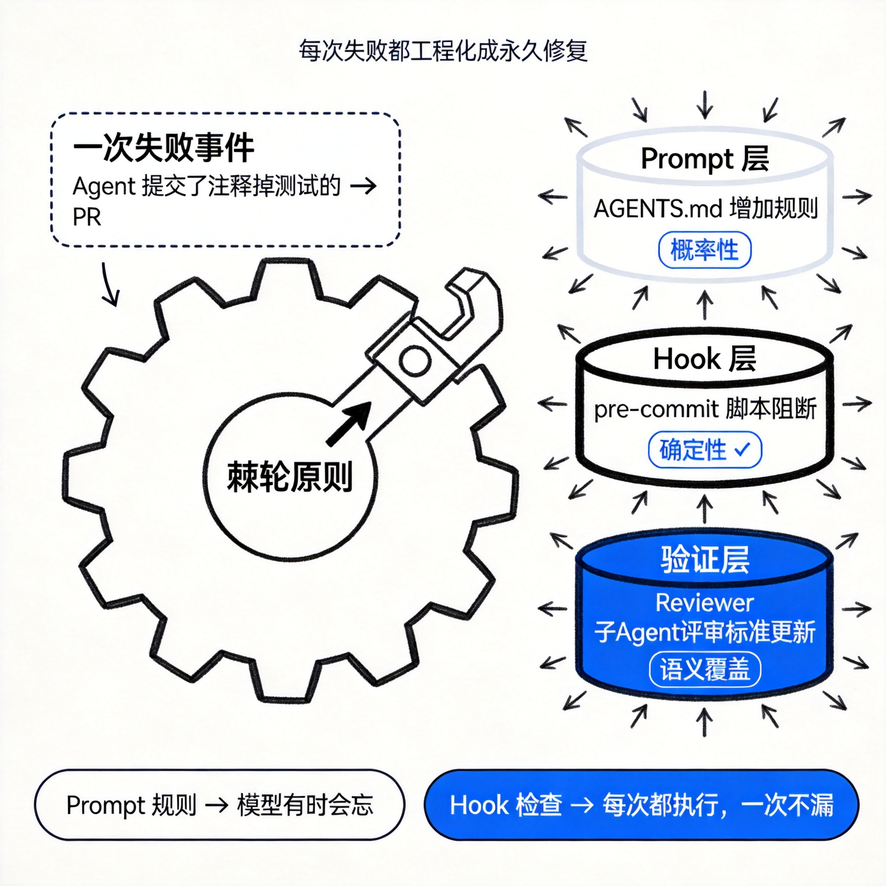
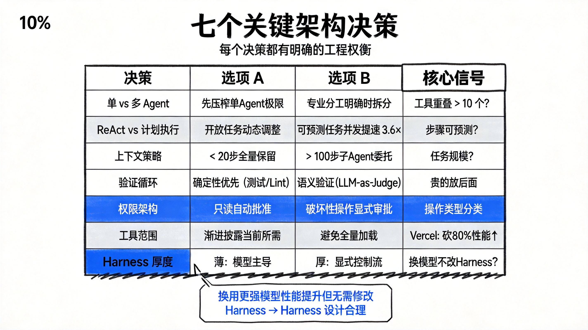

2024 年，Princeton 团队做了一个实验。他们把 GPT-4 扔进一个标准的代码修复基准 SWE-bench，让它解决真实的 GitHub Issue。模型没变，训练数据没变，只有一件事不同：把模型接入的那套基础设施，重新设计了一遍。
结果：通过率从 3.8% 跳到了 12.5%。
同年，Anthropic 的工程团队把 Claude 3.5 Sonnet 接入一套两个工具的精简框架——Bash 加 Edit——再加上一个强制使用绝对路径的约束。SWE-bench Verified 得分：49%。
而用同一个 Claude 3.5 Sonnet，接入一个普通的聊天界面：33%。
接入更老的 Claude 3 Opus：22%。
也就是说，模型换代从 Opus 到 Sonnet 带来了 11 个百分点的提升。但同一个 Sonnet，换一套基础设施，带来了 16 个百分点的提升。
工程比模型的代差更值钱。

LangChain 的故事更极端。他们只改动了包裹 LLM 的基础设施——模型权重一字未动——在 TerminalBench 2.0 上，从榜单第 30 名开外直接跳到第 5 名。
这件事有一个名字，刚刚在 2026 年初被正式命名：Agent Harness。
Addy Osmani 的定义直接：
"The gap between what today's models can theoretically do and what you actually see them doing is largely a harness gap."
模型的理论能力和你实际看到的表现之间，本质上差的是 Harness。
这篇文章要讲清楚这个距离从哪来，以及怎么缩短它。
三个来自业界的等价定义：
Anthropic 的 Claude Code 官方文档写道："the SDK is the agent harness that powers Claude Code"。OpenAI 的 Codex 团队把 "agent" 和 "harness" 当同义词用，指代模型以外的全部基础设施。LangChain 的 Vivek Trivedy 给出了最简洁的公式：
"If you're not the model, you're the harness."
具体来说，一个 Harness 包含：
Agent 是涌现的行为，用户交互的那个目标导向、使用工具、能自我纠错的实体；Harness 是产生这个行为的机器。当有人说"我搭了一个 Agent"，他的意思是他搭了一个 Harness，然后把它对准了一个模型。
Claude Code、Cursor、Codex、Aider、Cline——这些都是 Harness。底层用的可能是同一个模型，但你体验到的行为差异，主要来自 Harness 的差异。
2023 年，AI 研究员 Beren Millidge 写了一篇文章，标题叫《Scaffolded LLMs as Natural Language Computers》。他的观察是：
"We have reinvented the Von Neumann architecture."
因为这是任何信息处理系统自然收敛到的抽象。
| 经典计算机组件 | Agent 等价物 |
|---|---|
| CPU | LLM 本身（推理引擎） |
| RAM（快但有限） | 上下文窗口 |
| 磁盘（大但慢） | 外部数据库、向量存储、文件系统 |
| 设备驱动 | 工具集成层 |
| 操作系统 | Harness |
一个裸 LLM 就是一颗没有 RAM、没有磁盘、没有 I/O 的 CPU。它能做推理，但它不知道时间，不记得昨天发生了什么，也没有办法操作外部世界。Harness 是让它能运转的操作系统。
围绕模型，有三个同心层级：
Prompt 工程：给模型写什么指令。精心设计的系统提示、少样本示例、Chain-of-Thought 引导——都在这一层。这一层影响模型在单次调用中输出什么。
Context 工程：管理模型在什么时候看到什么内容。决定什么信息进窗口、什么信息排除在外、以什么顺序排列。这一层影响模型跨越多轮时的连贯性。
Harness 工程：包含以上两者，加上整个应用基础设施。工具编排、状态持久化、错误恢复、验证循环、安全执行、生命周期管理——全在这一层。这一层决定模型的能力能否实际转化为任务完成。
Harness 工程不是 Prompt 工程的一个子集，它是一个独立的工程学科。

综合 Anthropic、OpenAI、LangChain 的实践，一个生产级 Agent Harness 有 12 个明确的组件。理解每一个，才能知道自己搭的 Harness 为什么有时好用、有时崩溃。
这是 Harness 的心跳。
实现的是 Thought-Action-Observation 循环，也叫 ReAct 循环：组装 Prompt → 调用 LLM → 解析输出 → 执行工具调用 → 把结果喂回去 → 重复，直到任务完成或触发终止条件。
从代码角度，这通常只是一个 while 循环：
while True:
prompt = assemble(system, tools, memory, history, user_msg)
output = llm(prompt)
if not output.tool_calls:
return output.text # 无工具调用 → 最终答案
for call in output.tool_calls:
result = execute(call) # 沙箱执行
history.append(call + result)
if steps > MAX_STEPS or tokens > MAX_TOKENS:
break # 安全停止循环本身并不复杂。Anthropic 把运行时描述为"dumb loop"——所有智能在模型里，Harness 只管理轮次。
为什么循环结构比模型更能决定幻觉率？
2023 年，Yao 等人发表的 ReAct 论文提供了最清晰的证据。他们在 HotpotQA 多跳问答任务上对比两种方法：纯 Chain-of-Thought（只推理，不行动）和 ReAct（推理与行动交织）。
在 Chain-of-Thought 模式下，模型倾向于编造中间步骤，幻觉率约 56%。
在 ReAct 模式下，每一步推理都要有外部 grounding（查询维基百科），幻觉率降至接近 0%。
关键不是"要不要推理"，而是推理和行动必须交织：推理帮助模型归纳和更新行动计划，行动为下一步推理提供真实的外部信息。只有推理，模型在封闭的文字循环里越走越偏；有了行动，每一步都在检验推理的质量。
循环的另一个关键问题是终止条件的设计。终止条件通常是分层的：
一个简单的问题可能只需要 1-2 轮；复杂的代码重构任务，可能跨越数十次工具调用。终止条件设计不当，任务未完成就停了，或者永远跑不停，都是 Harness 的问题，不是模型的问题。

工具是模型的手。
在技术上，工具以 schema 的形式注入 LLM 的上下文：名称、描述、参数类型。模型看到这些 schema，决定要不要调用、调什么参数。工具层本身负责：注册、schema 验证、参数提取、沙箱执行、结果捕获，以及把结果格式化为模型可读的 Observation 返回到循环里。
Claude Code 的工具跨越六类：文件操作、搜索、执行、Web
访问、代码智能、子 Agent 生成。OpenAI Agents SDK 支持三种：原生函数工具（通过 @function_tool），托管工具（WebSearch、CodeInterpreter、FileSearch），以及
MCP 服务器工具。
工具定义是文档工程，不是 API 封装。
Anthropic 在《Building Effective Agents》里说得很直接：工具定义值得和整体 Prompt 同等量级的精心设计。一个好的工具定义，就像给初级开发者写的文档：
read_file，不是
file_op）
SWE-bench 的 Anthropic 实现发现了一个细节：要求模型使用绝对路径，而不是相对路径。就这一个约束，消灭了模型切换目录后找不到文件的整类错误。通过约束参数结构让错误难以发生，而不是依赖模型记住一条规则。
工具数量悖论：更多工具不等于更强 Agent。
Vercel 把 v0 的工具数量砍了 80%，性能反而提升了。Claude Code 通过懒加载实现了 95% 的上下文缩减。
原因是工具描述本身占用上下文。30 个工具的完整描述可以轻松消耗数千 token，而这些 token 原本可以放任务相关的上下文。更糟的是，工具数量超过认知阈值后，模型开始在工具之间产生混淆，误选率和参数错误率随之上升。
实践原则：每个步骤只暴露当前步骤所需的工具集合，而不是启动时加载全量工具。这个原则叫渐进披露（Progressive Disclosure）。
还有一个安全盲点容易被忽视：工具描述直接注入 Prompt。如果接入了未经验证的第三方 MCP 服务器，那个服务器的工具描述可以在 Agent 开始工作之前就向 Prompt 注入恶意内容——提示注入攻击的一种变体。十个高度专注的工具始终优于五十个有重叠的工具，这既是性能原因，也是安全原因。
记忆解决的是 LLM 的本质限制：它只知道权重里的内容，以及当前上下文里的内容。上下文窗口有限，权重不会实时更新。记忆层是 Harness 填补这个缺口的机制。
三个时间尺度：
短期记忆是单次会话内的对话历史。它活在上下文窗口里——快，但受窗口大小限制，会话结束就消失。
长期记忆跨会话持久化。各家实现不同：
get_store()
访问
Claude Code 的三层记忆层级解决了一个根本矛盾：记忆要有用，就得能被找到；但每次把所有记忆全部加载进上下文，又会把窗口撑爆。
三层的设计是：
这个设计背后有一个关键原则：Agent 要把自己的记忆当作提示，而不是事实。行动之前验证实际状态，不要直接信任记忆里写的东西，因为记忆可能过时，文件系统才是当前真相的来源。
上下文管理是很多 Agent 静默失败的地方。
上下文腐化（Context Rot）是核心问题。Stanford 的研究"Lost in the Middle"发现：当关键信息落在上下文窗口的中间位置时，模型的信息提取准确率下降超过 30%。模型更擅长处理出现在开头和结尾的信息。
这意味着什么？即使你有百万 token 的上下文窗口，随着历史越堆越多，早期注入的重要指令和约束会被淹没在窗口中间，悄悄失效。上下文窗口变大解决了"装不下"的问题，但没有解决"找不到"和"注意力稀释"的问题。
五种生产级上下文管理策略：
压缩（Compaction）：当上下文接近上限时，把对话历史摘要化，折叠成一段精炼的描述，再注回上下文。关键在于压缩什么、保留什么。Claude Code 的压缩策略：保留架构决策和未解决的 Bug，丢弃冗余的工具输出细节。这个判断需要 Harness 设计者提前想清楚，什么信息具有跨时间的价值，什么信息只是过渡性噪音。
观察遮蔽（Observation Masking）：JetBrains 的 Junie 采用的方式——在上下文里保留工具调用记录（模型调用了什么工具），但隐藏工具返回的具体输出。模型能看到自己做过什么，但不需要每次都把几千行的 JSON 结果重新处理一遍。
即时检索（JIT Retrieval）：不是预先把可能需要的内容全装进来，而是维护一套轻量的指针或索引，在实际需要时才动态拉取。Claude Code 用 grep、glob、head、tail 等工具按需读取文件片段，而不是把整个代码库加载进上下文。
工具调用卸载（Tool-call Offloading）：当一个工具的输出极其庞大（比如一份 2000 行的日志），不把完整内容放进上下文——而是写入文件系统，上下文只保留关键的头部和尾部摘要，以及文件路径引用。模型知道完整内容在哪，需要时自己去取。
子 Agent 委托：把长任务拆分给子 Agent，每个子 Agent 在独立的上下文窗口里深入探索。关键约束：子 Agent 返回的摘要被限制在 1000-2000 token，而不是把整个探索过程的上下文都传回来。广泛探索，但压缩汇报。
ACON 研究提供了量化支撑：通过优先保留推理链而非原始工具输出，token 减少了 26-54%，任务准确率维持在 95% 以上。上下文里大多数工具输出在第一次使用后就成了噪音，而推理链——模型怎么理解这个结果的——才有持久价值。Anthropic 在 Context Engineering 指南里把目标定义为：找到能最大化期望输出的最小高信号 token 集合。

每一轮循环的开始，Harness 都要组装模型实际看到的输入。这个组装过程是有层次的。
OpenAI Codex 的优先级栈从高到低是：
定位原则来自"Lost in the Middle"的推论：关键内容要放在 Prompt 的开头和结尾，不要让它们漂移到中间。如果系统提示里有五条最重要的约束，它们应该在开头，不是藏在第三段第七条。
这听起来简单，但实践中容易被违反：随着时间推移，系统提示越写越长，早期添加的关键规则被越来越多的说明文字挤到了中间，Agent 开始"忘记"遵循那些规则——不是因为它不懂，而是因为注意力分配上，那些规则已经淡入了背景。
现代 Harness 依赖原生工具调用：模型返回结构化的 tool_calls
对象，而不是需要解析的自由文本。判断逻辑因此变得很干净：
tool_calls？执行它们，把结果塞回去，继续循环
tool_calls？这就是最终答案，结束
对于需要强制结构化输出的场景，OpenAI 和 LangChain 都支持通过 Pydantic 模型约束输出 schema，让模型只能返回符合预设格式的内容。
但解析失败的情况依然会发生。传统的兜底方案是
RetryWithErrorOutputParser：把原始
Prompt、失败的补全结果、以及解析错误描述，一起喂回给模型，让它重试。这个模式粗暴但有效，适合边缘情况的兜底。
Agent 在执行过程中积累的所有中间状态——当前任务进度、已完成的步骤、未解决的问题——需要某种方式持久化。如果 Agent 崩溃了、上下文窗口满了、或者用户第二天继续工作，这些状态要能恢复。
不同框架的选择方向各异：
LangGraph 把状态建模为类型化字典流过 graph node，用 reducer 函数合并更新。在 super-step 边界自动打 checkpoint，支持任意时刻的恢复，也支持"时间旅行调试"——回滚到任意历史状态重新执行。
OpenAI 提供四种互斥策略：应用层自己管理内存、SDK
级别的 Sessions（支持 SQLite 或 Redis）、服务端的 Conversations API、以及轻量的 previous_response_id
链式引用。
Claude Code 用最简单直接的方式：git commit 作检查点，进度文件记录当前状态和下一步计划。文件系统就是状态存储，git 历史就是检查点记录。零额外依赖，对开发者完全透明，还自带 diff 工具方便审查。
这里有一个关键的数学事实：
0.99^10 = 0.904
如果每一步的成功率是 99%，一个 10 步的任务，端到端成功率只有 90.4%。如果每步成功率是 95%，10 步任务的完成率就跌到 59.9%。错误在长链中以指数方式复合，没有错误处理就会系统性失败。
LangGraph 把错误分四类，每类处理策略不同：
ToolMessage
返回循环，让模型看到错误然后自我调整
Anthropic 的做法：在工具处理器内部捕获所有失败，把失败转化为错误结果返回给循环，而不是抛出异常让循环崩溃。模型能看到错误，有机会自我纠正，而不是整个任务直接中止。
Stripe 的生产 Harness 设置了一个简单的边界：对同一个错误最多重试两次。超过这个阈值，就不再是"瞬时错误"，需要人工介入。
Hooks 是 Harness 的执法层。
Addy Osmani 的表述最清晰：Hooks 填补了"请求执行一个动作"和"强制执行该动作"之间的空白。它们在生命周期的特定节点触发：工具调用前、文件编辑后、git commit 前。
Hook 的工作：
黄金设计原则：成功沉默，失败冗长（Silent on success, verbose on failure）。 类型检查通过，Agent 什么都听不到，直接继续。类型检查失败，完整的错误信息立刻注入循环，供模型定位问题、自我纠正。成功时不需要"已通过"的确认消息占位，失败时要足够具体让模型能采取行动。
Hook 和 Prompt
里规则的本质区别：Hook 是确定性的，Prompt
是概率性的。在 AGENTS.md 里写"不要注释掉测试"，模型有时会遵守，有时会忘记。在 pre-commit hook
里写一个检测 .skip(
的脚本，它每次都会检查，一次不会漏。需要百分百执行的约束，放 Hook；软性建议，放 Prompt。
在安全架构层面，Anthropic 坚持一个原则：权限执行与模型推理在架构上分离。模型决定它想做什么，工具系统决定是否允许。 Claude Code 独立管控约 40 个工具能力，每次工具调用前都要过三道关：信任建立（项目加载时）、权限检查（调用前）、高风险操作显式确认（涉及文件删除、生产部署等操作）。
OpenAI SDK 的三层护栏提供了互补的覆盖：输入护栏作用于首个 Agent（过滤恶意输入），输出护栏作用于最终答案（防止有害输出），工具护栏在每次工具调用时触发（细粒度操作控制）。任何一层触发 "Tripwire"，Agent 立刻停止，不继续执行。
这是把 Demo 和生产级 Agent 真正分开的组件。
没有验证循环的 Agent 是盲目的：它执行动作，但不知道结果是不是想要的。它会在错误的方向上越走越深，直到任务失败或用户发现不对。
Anthropic 推荐三种验证方式，各有适用场景：
基于规则的验证（测试、Linter、类型检查）：确定性的真实。通过就是通过，失败就是失败，没有歧义。适合代码正确性的验证。
视觉反馈（Playwright 截图）：针对 UI 任务。Agent 修改了前端代码，让 Playwright 截图，然后（通过视觉模型或人工）检查渲染结果是否符合预期。
LLM-as-Judge（独立子 Agent 评估）：针对语义问题。当"正确与否"不能被自动化规则覆盖时（如文案质量、设计合理性），用一个独立的子 Agent 来评估当前 Agent 的输出。关键是"独立"——评估者和执行者必须分离，防止模型对自己的输出有系统性的正向偏差。
Claude Code 作者 Boris Cherny 的观察值得记住：给模型一种验证自己工作的方式，任务质量提升 2-3 倍。这不是在给模型增加负担，而是给它一面镜子——输出不再是单向的，而是有反馈的。
Martin Fowler 把这套机制分为两种：Guides（前馈），在动作发生之前提供引导；Sensors（反馈），在动作发生之后观察结果。完善的验证循环两种都要有。
单个 Agent 的上下文窗口有限，专注单一任务的能力也有限。子 Agent 编排让多个 Agent 协作处理超出范围的任务。
Claude Code 支持三种子 Agent 执行模型：
Fork：字节级完整复制父 Agent 的上下文，创建一个完全知情的子 Agent。适合需要完整父上下文的任务。
Teammate：子 Agent 在独立的终端面板里运行，通过文件信箱（file-based mailbox）与父 Agent 通信。相互独立，通过文件交换信息。
Worktree：子 Agent 拥有独立的 git worktree 和独立的分支。多个子 Agent 可以同时在代码库的不同部分工作，不会互相干扰。
OpenAI SDK 提供两种模式：agents-as-tools（子 Agent 作为父 Agent 的工具，处理有边界的子任务，完成后控制权回到父 Agent）和 handoffs（父 Agent 把完整控制权交给子 Agent，适合有明确专业分工的场景）。
何时拆多 Agent 是一个常被高估价值的决策。Anthropic 和 OpenAI 的共识：先最大化单 Agent 的能力，多 Agent 系统增加了路由的 LLM 调用开销和 Handoff 时的上下文损失。只有当工具集合重叠超过约 10 个，或者任务域之间有非常清晰的专业分工，才值得引入多 Agent 架构。
生产级 Harness 需要能看见自己在做什么。这包括：每次 LLM 调用的 token 消耗、工具调用的延迟分布、错误率和错误类型分布、每个任务的总成本、以及完整的执行轨迹（tracing）用于事后调试。
可观测性不是"有就更好"的功能，在复杂 Agent 系统里它是必须品。没有它，你不知道上下文溢出发生在哪一步，不知道哪个工具调用是成本黑洞，不知道验证循环的命中率是多少。无法量化的系统无法改进。
上面的 12 个组件描述了 Harness 是什么。但 Harness 工程真正与众不同的地方，在于它是持续演进的工艺，而不是一次性的架构决策。
Addy Osmani 把这个工程哲学命名为"棘轮原则"（The Ratchet）：
"Whenever an agent fails, you engineer a permanent solution so it never makes that exact mistake again."
每次 Agent 失败，都要转化成永久的改进，确保同样的错误不会再发生。
假设你的 Agent 提交了一个注释掉测试用例的 PR，被合并进了主干。棘轮原则下，你不能只是"下次注意"：
第一步：AGENTS.md 增加一条明确规则："永远不要注释掉测试；要么修复它，要么删除它。"
第二步：在 pre-commit hook 里添加一个脚本，自动检测
diff 里的 .skip(
或者测试注释模式，有就阻止 commit。
第三步：如果你有 Reviewer 子 Agent，更新它的评审标准，把注释掉的测试加入阻断条件。
三个层次的修复：Prompt 层（告诉模型不应该这样做）、Hook 层（确定性地阻断）、验证层（独立审查）。三层都到位，这个错误就从系统里消失了，不依赖模型记住一条规则。

AGENTS.md 应该像飞行员的检查清单，不是风格指南。检查清单很短，每一条都是为了防止一个已知的具体灾难；风格指南很长，很多条只为美观和一致性。前者每次都被仔细执行，后者经常被跳过。
把 AGENTS.md 当成风格指南来写，它会越写越长，越长越被模型稀释，越稀释关键规则越容易被忽略。每一条规则都应该能回答：这是为了防止哪一次具体的历史失败？如果回答不出来，那条规则不应该在那里。
每个团队的正确 Harness 都不一样。 一个处理金融合规的 Agent，历史失败是"引用了错误的监管条例版本"；写代码的 Agent，历史失败是"没有处理 edge case"；管理工单的 Agent，历史失败是"在客户邮件里使用了内部 ID"。这些失败历史各不相同，塑造出来的 AGENTS.md、Hook 集合、验证循环也各不相同。正确的 Harness 从具体的失败历史中生长出来，不是从最佳实践文档复制来的。
来追踪一次循环从头到尾的完整过程，把所有组件串起来。
步骤一：Prompt 组装
循环开始，Harness 把以下内容组装成模型实际接收的输入：
定位策略：最关键的内容（核心约束、当前任务目标）放在开头和结尾，而不是中间。
步骤二：LLM 推理
组装好的 Prompt 送到模型 API。模型生成输出：可能是纯文本，可能是工具调用请求，可能是两者混合。这一步 Harness 是完全被动的，它只是提供输入和等待输出。
步骤三：输出分类
Harness 解析输出：
步骤四：工具执行
对每个工具调用，Harness 按序执行：
只读操作（文件读取、搜索）可以并发执行。写操作（文件修改、命令执行）必须串行。
步骤五：结果打包
工具返回的原始结果，格式化成模型可读的形式，加入到对话历史。关键设计：
对于超大的工具输出（比如完整的日志文件），只提取头部和关键摘要放进上下文，完整内容写到文件系统，附上文件路径引用。
步骤六：上下文更新
新的工具调用和结果追加进历史。Harness 检查当前上下文大小：
步骤七：循环
回到步骤一，用更新后的历史重新组装 Prompt，开始下一轮。
重复，直到满足终止条件：无工具调用 / 最大轮次超限 / token 预算耗尽 / 安全触发 / 用户中断。
在搭建 Harness 时，有七个决策点几乎每次都会遇到。每个都有明确的工程权衡，没有绝对正确答案，但有可以参考的实证数据。

决策一：单 Agent vs 多 Agent
直觉上，多个专业 Agent 协作听起来比单个通用 Agent 更强。但 Anthropic 和 OpenAI 的共识是：先把单 Agent 压到极限，再考虑拆分。
多 Agent 系统有隐性成本：每次 Handoff 都需要额外的 LLM 调用来做路由判断，每次上下文切换都会丢失部分信息，编排逻辑本身也增加了调试复杂度。
一个粗略的信号：工具集合里有超过约 10 个功能重叠的工具，或者任务领域之间有非常清晰的专业分工（比如代码生成和安全审计），才值得认真考虑多 Agent。否则，复杂度增加的代价很可能大于协作带来的收益。
决策二：ReAct vs 计划 - 执行
ReAct（Thought-Action-Observation 交织）在每一步都会推理然后立刻行动，适合开放性任务，因为计划会随着观察动态调整。代价是每步成本较高，整体延迟积累明显。
计划 - 执行（先生成完整计划，再执行）适合任务结构清晰、步骤可预测的场景。LLMCompiler 研究报告显示，对比顺序 ReAct，计划 - 执行模式可以实现 3.6 倍的加速（通过并发执行独立子任务）。
两者不互斥。很多成熟的 Harness 用分层方式：高层用计划 - 执行（决定"做什么"），低层用 ReAct（决定"怎么做"）。
决策三：上下文管理策略
五种策略（压缩、观察遮蔽、即时检索、工具调用卸载、子 Agent 委托）不是竞争关系，而是针对不同情况的工具箱。
一个简单的决策框架：
| 任务规模 | 推荐策略 |
|---|---|
| <20 步 | 全量保留，无需干预 |
| 20-100 步 | 即时检索 + 工具调用卸载 + 压缩触发 |
| >100 步 | 子 Agent 委托 + 检查点 + Ralph Loop 模式 |
决策四：验证循环设计
验证的核心权衡是确定性 vs 语义完备性：测试和 Linter 是确定性的，但覆盖不了语义层面的问题；LLM-as-Judge 能处理语义，但增加了延迟和额外成本，而且不是确定性的。
成熟的 Harness 通常分层：先跑确定性验证（快速、低成本，覆盖大多数错误），只有确定性验证通过之后，才触发语义验证（昂贵，但必要）。把贵的验证放在便宜的验证后面。
决策五：权限与安全架构
宽松策略（自动批准大多数操作）：响应快，适合受控的内部环境。风险是破坏性操作没有缓冲。
严格策略（每个操作都需要明确批准）：安全，适合面向用户的生产环境。代价是频繁的人工中断打断 Agent 的工作流。
中间地带：对操作类型分类，只读操作自动批准，写操作需要确认，破坏性操作（删除、部署）需要显式的人工审批。
决策六：工具范围策略
核心原则是"最小工具集"：每个步骤只暴露这个步骤实际需要的工具，而不是"提供所有可能用到的工具"。渐进披露不只是节省 token，更是帮助模型聚焦——更少的选择意味着更少的错误选择。Vercel v0 砍掉 80% 工具后性能提升，就是这个原则最直接的验证。
决策七：Harness 厚度
Anthropic 押注薄 Harness：提供最小的基础设施，把尽可能多的判断交给模型。当新模型版本释放出更强的能力，薄 Harness 能更快受益，不需要大改设计。Claude Code 定期删除 Harness 里的规划步骤，因为新模型已经内化了这个能力，外部规划变成了多余的。
LangGraph 等 graph-based 框架的押注是厚 Harness：用显式的控制流编码复杂的任务逻辑，让 Harness 更可预测、更易调试。代价是模型能力提升时，需要手动去删除已经过时的显式逻辑。
没有哪个选择天然正确。一个实用的检验标准：当你换用更强的模型，性能提升了，但你不需要修改 Harness——这说明 Harness 设计得合理。如果每次换模型都要大改 Harness，说明 Harness 里编码了太多"模型应该做但现在做不到"的补偿逻辑，这些逻辑是会过时的。
| 框架 | 循环模型 | 状态管理 | 工具模型 | 设计哲学 |
|---|---|---|---|---|
| Anthropic SDK | query()
异步迭代器
|
git + 进度文件 | 6 类工具 + MCP | 薄 Harness，模型主导 |
| OpenAI Agents SDK | Runner（async/sync/stream）
|
Sessions / Conversations API | function / hosted / MCP | 代码优先，Python 原生 |
| LangGraph | state graph（node + conditional edge） | super-step checkpoint | graph node 封装 | 显式控制流，可调试 |
| CrewAI | 角色制多 Agent | Crew 级状态 | 按角色分配工具 | 协作导向 |
| AutoGen | 对话驱动编排 | Magentic 动态任务台账 | 五种编排模式 | 群聊 + 动态协调 |
Anthropic SDK 把循环包装成 query()
函数返回异步迭代器，流式输出每一步的消息。运行时是"dumb loop"——所有智能在模型里，SDK 只管理轮次。和 Claude
Code 共用同一套工具系统，模型经过了专门为这套工具定义训练的。
OpenAI Agents SDK 三种运行模式（同步、异步、流式）覆盖不同使用场景。工作流逻辑用原生 Python 表达，不需要额外的 DSL。Codex 团队在此基础上加了三层架构：Codex Core（Agent 代码 + 运行时）、App Server（双向 JSON-RPC API）、以及多个客户端界面（CLI、VS Code、Web）。所有界面共享同一个 Harness，这是为什么"Codex 模型在 Codex 界面里比在通用聊天窗口里表现更好"。
LangGraph 把 Harness 建模为显式 state
graph。最简单的形式是两个 node（llm_call
和 tool_node）加一条
conditional edge：有工具调用，路由到 tool_node；没有，路由到
END。state graph 的优势是可调试性——每个 node 的输入输出都是显式的，执行轨迹可以追踪，可以在任意 checkpoint 暂停和恢复。它从
LangChain 的 AgentExecutor
演化而来，后者在 v0.2 被弃用，因为难以扩展且不支持多 Agent。
Harness 和底层模型之间存在双向绑定关系，这是一个经常被忽视的设计约束。当前的模型往往在特定 Harness 的配合下进行后训练——模型学会了用那套 Harness 的具体工具定义工作。更改工具的实现方式，即使功能不变，也可能降低性能，因为模型已经对旧的工具定义形成了依赖。Harness 不是随时可以无损替换的中间层，它是训练数据的一部分。
去掉所有非必要组件，骨架是这样的：
import anthropic
client = anthropic.Anthropic()
tools = [...] # 工具定义列表
history = []
MAX_STEPS = 50
MAX_TOKENS = 100_000
system_prompt = """...""" # 系统提示
while True:
response = client.messages.create(
model="claude-opus-4-5",
max_tokens=4096,
system=system_prompt,
tools=tools,
messages=history
)
# 追加模型响应到历史
history.append({"role": "assistant", "content": response.content})
# 检查终止条件
if response.stop_reason == "end_turn":
print(response.content[0].text)
break
if response.stop_reason == "tool_use":
# 执行所有工具调用
tool_results = []
for block in response.content:
if block.type == "tool_use":
result = execute_tool(block.name, block.input)
tool_results.append({
"type": "tool_result",
"tool_use_id": block.id,
"content": str(result)
})
# 把工具结果追加到历史
history.append({"role": "user", "content": tool_results})
# 安全停止
total_tokens = sum(
msg.get("usage", {}).get("input_tokens", 0)
for msg in history if isinstance(msg, dict)
)
if len(history) > MAX_STEPS * 2 or total_tokens > MAX_TOKENS:
break这个骨架没有压缩，没有错误分类，没有 Hook，没有可观测性。但它可以运行，而且每个缺失的组件都可以在不改变核心结构的前提下加上去。
工具定义里什么都不能省。一个生产级的工具定义模板：
{
"name": "read_file", # 动词 + 名词，意图清晰
"description": (
"读取指定路径的文件内容并返回字符串。"
"适用于需要查看代码、配置文件或文档内容的场景。"
"如果需要查看大文件的特定行范围，优先使用 read_file_range。"
# ↑ 明确与相邻工具的边界
),
"input_schema": {
"type": "object",
"properties": {
"path": {
"type": "string",
"description": "文件的绝对路径，例如 /home/user/project/src/main.py"
# ↑ 示例值，poka-yoke：强制绝对路径
}
},
"required": ["path"]
}
}错误行为需要在实现层面而不仅是定义层面处理：
def read_file(path: str) -> str:
try:
with open(path, 'r') as f:
return f.read()
except FileNotFoundError:
return f"Error: File not found at {path}. Verify the path is correct and the file exists."
except PermissionError:
return f"Error: Permission denied for {path}. You may need elevated privileges."
except Exception as e:
return f"Error: Unexpected error reading {path}: {str(e)}"
# 注意：返回错误字符串，而不是抛出异常
# 让模型看到错误并自我纠正，而不是让循环崩溃错误的写法（风格指南型）：
# 代码规范
- 使用 4 空格缩进
- 函数名使用小写下划线
- 类名使用驼峰命名
- 注释要清晰描述函数用途
- 避免过深的嵌套
- 每个函数不应超过 50 行正确的写法（检查清单型，每条规则有来源）：
# Agent 工作规则
## 代码修改
- 永远不要注释掉测试；要么修复，要么删除
（来源：2024-03 PR #847 合并了注释掉的集成测试）
- 提交前必须跑 `npm run type-check`
（来源：2024-05 部署了类型错误的代码导致生产故障）
## 文件操作
- 始终使用绝对路径，不使用相对路径
（来源：目录切换后相对路径失效导致的系统性错误类别）
## 外部 API
- 调用第三方 API 前检查现有封装
（来源：重复实现了已有的 Stripe 封装，引入不一致的错误处理）每一条规则都能回答：这是为了防止哪一次具体的失败？
对于需要跨越多个上下文窗口的长任务，Anthropic 总结的两阶段模式：
初始化 Agent（只在任务开始时运行一次）：
progress.md），记录所有子任务和当前状态
# progress.md（示例）
## 任务：重构认证模块
### 状态：进行中（开始于 2026-05-12）
### 已完成
- [x] 分析现有认证流程
- [x] 设计新的 Token 刷新逻辑
### 进行中
- [ ] 实现 OAuth2 集成（当前焦点）
- 完成了 Google OAuth
- 待完成：GitHub OAuth、Apple OAuth
### 待办
- [ ] 迁移旧用户数据
- [ ] 更新 API 文档
- [ ] 集成测试
### 关键决策记录
- 选择 JWT 而非 Session 的原因：支持无状态横向扩展
- Token 过期时间设为 15 分钟：基于安全审计建议 #2024-sec-review编码 Agent（每个后续会话开始时）：
git
log --oneline -20 → 了解最近做了什么
progress.md
→ 找到当前焦点和未完成的子任务
progress.md（标记完成，更新当前焦点）
文件系统（progress.md）和
git 历史（git
log）共同提供了跨上下文窗口的连续性。每次 Agent 重新开始，都能从这两个来源重建足够的上下文，而不需要依赖上一个会话的对话历史。
| 错误 | 后果 | 修复 |
|---|---|---|
| 工具描述过于简短 | 模型猜测参数含义，参数错误率上升 | 写完整的文档：用途、示例、边界、相邻工具区别 |
| 工具数量不加控制 | 上下文被工具描述稀释，误选率上升 | 渐进披露：每步只暴露当前需要的工具集合 |
| 使用相对路径 | 切换目录后路径失效，整类错误出现 | poka-yoke：强制绝对路径，在 schema 里写明示例 |
| 空输出无反馈 | 模型误判为成功，沿错误方向继续 | 显式返回 "No results found for ..." |
| 无终止条件 | 无限循环，成本失控 | 最大轮次 + token 预算双重保险 |
| 错误信息不结构化 | 模型无法定位问题，recover 失败 | 错误返回包含类型、位置、建议操作 |
| 跨会话无状态 | 每次从零开始，无法处理长任务 | 进度文件 + git 检查点 |
| 关键规则在 Prompt 中间 | 随着历史增长，规则被淹没失效 | 关键约束置于 Prompt 开头和结尾 |
| Hook 依赖 Prompt 执行 | 需要百分百执行的约束靠模型记忆 | 强约束放 Hook，软建议放 Prompt |
| 接入未验证的 MCP 服务器 | 工具描述注入恶意内容（提示注入） | 审查所有外部 MCP 服务器的工具定义 |
技术进步容易催生一个直觉：随着模型变强，Harness 会慢慢变得多余。
这个直觉不完全错，但不完整。更准确的说法是：Harness 不会消失，它只会迁移。
最近一代模型大幅降低了对"上下文焦虑"类缓解措施的需求——百万 token 的上下文窗口出现之前，很多 Harness 的复杂度都用于管理上下文稀缺。这部分复杂度确实减少了。
但模型变强同时意味着：以前不可能完成的任务变得可能了。新任务带来新的失败模式，新的失败模式需要新的 Harness 组件覆盖。地板在上升，天花板也在上升。
Manus 在六个月内重建了五次，每次都删掉了复杂度——复杂的工具定义变成了通用的 shell 执行，"管理 Agent"变成了简单的结构化 Handoff。Anthropic 定期删除 Claude Code Harness 里的规划步骤，因为新模型已经内化了这个能力，外部规划成了多余的开销。
这是正确的方向：每个 Harness 组件都编码了一个假设——"模型单独做不到这件事"。当模型进化使这个假设失效，那个组件就应该被移除。 残留的过时组件不只是浪费，它们可能实际上干扰更强的模型，因为模型现在能做的反而被 Harness 绕开了。
行业趋势是从 LLM API 到 Harness API。
早期，你调用 LLM API 获得补全，然后自己搭循环、工具、上下文管理。现在，SDK 直接提供运行时：循环、工具系统、上下文管理、Hooks、沙箱，开箱即用。你专注于两件事：领域特定的 Prompt 工程，和领域特定的工具定义。
这不是说 Harness 工程变简单了。它的意思是：通用的 Harness 基础设施正在商品化，差异化越来越来自领域特定的设计——工具定义有多贴合任务，AGENTS.md 有多精确地编码了领域知识，验证循环有多完善地覆盖了你关心的质量维度。
最后一个视角：Harness 正在从静态配置文件变成编译器。
当前，Harness 是人工配置的——你写 AGENTS.md，你定义工具，你设计验证循环。未来的开放问题是：如果 Agent 能分析自己的执行轨迹，识别出哪个 Harness 层面的设计导致了失败，然后自动修复——那个 Harness 就从配置文件变成了持续优化自身的系统，更像一个编译器，不断用历史数据改进代码生成质量。
你的 Agent 下次失败的时候，第一个问题不应该是"换哪个模型"，而应该是：
Harness 的哪个组件没有到位？
以下资料是本文的直接来源，读完这篇想要更深入的，这六篇就够了：